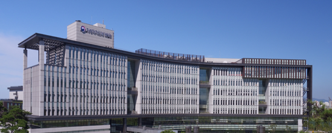

기관소개
연혁

-
2025년
- 09.01
- 설립 60주년
-
2023년
- 08.01
- 전북 혁신도시 이전 10주년
-
2021년
- 12.14
- 지방의정연수센터 신설
- 02.25
- 지방자치역량센터 신설
-
2017년
- 07.26
- 지방자치인재개발원으로 개편
-
2013년
- 08.01
- 지방행정연수원 신축이전(전북 완주군 이서면 반교로 150)* 이전규모 : 부지 181,794㎡(5.5만평) / 건물 49,353㎡(1.5만평)
-
2025년
- 09.01
- 설립 60주년
-
2023년
- 08.01
- 전북 혁신도시 이전 10주년
-
2021년
- 12.14
- 지방의정연수센터 신설
- 02.25
- 지방자치역량센터 신설
-
2017년
- 07.26
- 지방자치인재개발원으로 개편
-
2013년
- 08.01
- 지방행정연수원 신축이전(전북 완주군 이서면 반교로 150)* 이전규모 : 부지 181,794㎡(5.5만평) / 건물 49,353㎡(1.5만평)
-
2008년
- 02.29
- 지방행정연수원으로 개편
-
2006년
- 01.01
- 지방혁신인력개발원으로 개편
-
2005년
- 12.09
- 조직개편 실시(팀제개편 및 혁신연구개발센터 신설)
- 01.01
- 자치인력개발원으로 개편 (교육행정연수부, 농업연수부, 건설교통연수부, 국제특허연수부, 통계연수부 소관부로 이관)
-
2004년
- 06.01
- 민방위교육관을 소방방재청으로 이관
-
1999년
- 01.02
- 교육행정연수부를 본원으로 이전, 통계연수부를 대전분원으로 이전
- 01.01
- 건설교통연수부를 수원분원으로 이전
- 01.01
- 국가전문행정연수원 확대개편 개원 (기획지원부, 자치행정연수부, 교육행정연수부, 농업연수부, 건설교통연수부, 국제특허연수부, 통계연수부 등 6개 부처 교육기관 통합)
-
1994년
- 04.21
- 중앙 민방위학교 흡수
-
1978년
- 01.24
- 지방행정연수원 신축이전(경기도 수원시 장안구 파장동)
-
1965년
- 09.01
- 지방행정연수원 설립(서울시 도봉구 쌍문동)
페이지 만족도 및 담당부서 안내
현재 페이지에 만족하십니까?
페이지 내용과 사용 편의성에 대한 의견을 들려주세요.